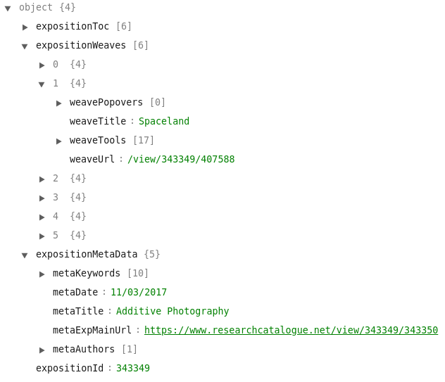

Malleability of Expositions as Data
RC Team
June 2019
Expositions as Digital Objects
- Render an exposition in multiple ways
- Respond to display device
- Program the behavior of an exposition
- A format makes exposition independent from a single implementation
- Dynamic entity that can be connected to services, devices and other digital objects
- Ensure long term accessibility
Graphical Expositions Now
- Structure (such as captions, columns, relationships, etc) are only recognizable visually
- Format is not specified but tied to the editor
- Cannot be processed, rendered differently, converted etc
Parsing Graphical Expositions
Parsing Graphical Expositions
Exposition Json Object
Potential Uses and Applications
- Conversion to/from established document formats
- Transfer between editors
- Implementation of new editors for graphical expositions
- Collecting metadata and analyzing expositions
- Archiving
- Dynamic rendering and programmable structures
Networks of Digital Objects on the RC
- Create links between expositions and works
- Dynamically create expositions with content from other expositions
- Create pages around key words with works and (parts of) expositions